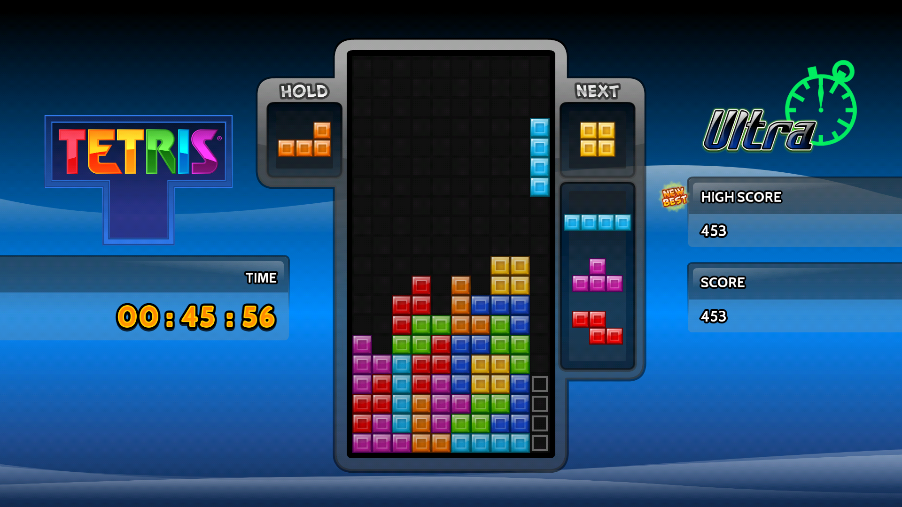
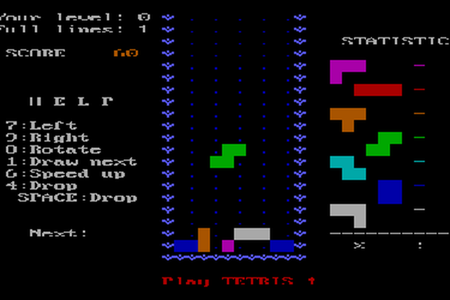
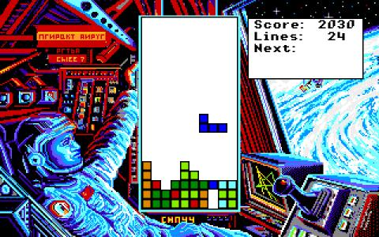

Tetris
Tetris (Russo: Тетрис [a] ) é um videogame de quebra-cabeça criado em 1985 por Alexey Pajitnov , um engenheiro de software soviético .Foi publicado por várias empresas para múltiplas plataformas, principalmente durante uma disputa sobre a apropriação dos direitos no final dos anos 1980. Após um período significativo de publicação pela Nintendo , os direitos foram revertidos para Pajitnov em 1996, que co-fundou a Tetris Company com Henk Rogers para gerenciar o licenciamento.
No Tetris , os jogadores completam linhas movendo peças de formatos diferentes ( tetrominós ), que descem para o campo de jogo. As linhas completadas desaparecem e concedem pontos ao jogador, e o jogador pode prosseguir para preencher os espaços vagos. O jogo termina quando as linhas não limpas alcançam o topo do campo de jogo. Quanto mais tempo o jogador atrasar esse resultado, maior será sua pontuação. Em jogos multijogador, os jogadores devem durar mais que seus oponentes; em certas versões, os jogadores podem infligir penalidades aos oponentes completando um número significativo de linhas. Algumas versões acrescentam variações nas regras, como exibições tridimensionais ou sistema de reserva de peças.
Construído com base em regras simples, Tetris se consolidou como um dos maiores videogames já feitos . Até dezembro de 2011, havia vendido 202 milhões de cópias – aproximadamente 70 milhões de unidades físicas e 132 milhões de downloads pagos de jogos para celular – tornando-se uma das franquias de videogame mais vendidas . A versão Game Boy é um dos jogos mais vendidos de todos os tempos , com mais de 35 milhões de cópias vendidas. Tetris está disponível em mais de 65 plataformas , estabelecendo um recorde mundial do Guinness para o videogame mais portado. Tetris está enraizado na cultura popular e sua popularidade vai além da esfera dos videogames; as imagens do jogo influenciaram a arquitetura, a música e o cosplay . O jogo também tem sido objecto de vários estudos de investigação que analisaram a sua complexidade teórica e mostraram o seu efeito no cérebro humano após uma sessão, em particular o efeito Tetris.
Tetris
Uma típica tela do jogo Tetris
Jogabilidade
Tetris é composto principalmente por um campo de jogo no qual peças de diferentes formas geométricas, chamadas " tetrominós ", descem do topo do campo. Durante esta descida, o jogador pode mover as peças lateralmente e girá-las até tocarem o fundo do campo ou pousarem em uma peça que foi colocada antes dele. O jogador não pode desacelerar as peças que caem nem pará-las, mas pode acelerá-las, na maioria das versões. O objetivo do jogo é usar as peças para criar o máximo possível de linhas horizontais completas de blocos. Quando uma linha é completada, ela desaparece e os blocos colocados acima caem uma classificação.Completar linhas concede pontos, e acumular um certo número de pontos ou linhas limpas move o jogador para um nível acima, o que aumenta o número de pontos concedidos por linha completada.
Na maioria das versões, a velocidade das peças que caem aumenta a cada nível, deixando o jogador com menos tempo para pensar na colocação.O jogador pode limpar várias linhas de uma vez, o que pode ganhar pontos de bônus em algumas versões. É possível completar até quatro linhas simultaneamente com o uso do tetrominó em forma de I; esse movimento é chamado de "Tetris" e é a base do título do jogo.
Se o jogador não conseguir fazer os blocos desaparecerem com rapidez suficiente, o campo começará a encher; quando as peças chegam ao topo do campo e impedem a chegada de peças adicionais, o jogo termina.Ao final de cada jogo, o jogador recebe uma pontuação baseada no número de linhas completadas. jogo nunca termina com a vitória do jogador. O jogador pode completar apenas o máximo de linhas possível, antes de uma perda inevitável.
Desde 1996, a Tetris Company definiu internamente especificações e diretrizes às quais os editores devem aderir para obterem uma licença do Tetris . O conteúdo destas diretrizes estabelece elementos como a correspondência de botões e ações, o tamanho do campo de jogo e o sistema de rotação.
Peças do jogo
As peças nas quais o jogo Tetris se baseia são chamadas de "tetrominós". A versão original de Pajitnov para o computador Electronika 60 usava colchetes verdes para representar os blocos que compõem os tetrominós.Versões de Tetris no Game Boy/Game Boy Color original e na maioria dos jogos portáteis dedicados usam gráficos em preto e branco ou em tons de cinza , mas as versões mais populares usam uma cor separada para cada forma distinta. Antes da padronização da Tetris Company no início dos anos 2000, essas cores variavam amplamente de implementação para implementação.
Pontuação
A fórmula de pontuação para a maioria dos produtos Tetris baseia-se na ideia de que linhas mais difíceis devem receber mais pontos. Por exemplo, uma única linha limpa na Zona Tetris vale 100 pontos, limpar quatro linhas de uma vez (conhecido como Tetris ) vale 800, enquanto cada Tetris consecutivo subsequente vale 1.200.Em conjunto, os jogadores podem receber combos que existem em certos jogos que recompensam a limpeza de múltiplas linhas em rápida sucessão. As condições exatas para acionar combos e a importância atribuída a eles variam de jogo para jogo.
Quase todos os jogos de Tetris permitem que o jogador pressione um botão para aumentar a velocidade de descida da peça atual ou fazer com que a peça caia e trave no lugar imediatamente, conhecido como "queda suave" e "queda forte", respectivamente. Ao realizar uma queda suave, o jogador também pode interromper o aumento da velocidade da peça liberando o botão antes que a peça se encaixe no lugar. Alguns jogos permitem apenas queda suave ou queda forte; outros possuem botões separados para ambos. Muitos jogos concedem um número de pontos com base na altura em que a peça caiu antes de travar, portanto, usar a queda brusca geralmente concede mais pontos.
História
Em 1979, Alexey Pajitnov ingressou no Centro de Computação da Academia Soviética de Ciências como pesquisador de reconhecimento de fala . Embora tivesse a tarefa de testar as capacidades do novo hardware, sua ambição era usar computadores para deixar as pessoas felizes.Pajitnov desenvolveu vários jogos de quebra-cabeça no computador do instituto, um Electronika 60 , um recurso escasso na época devido em parte ao CoCom .Para Pajitnov, "os jogos permitem que as pessoas se conheçam melhor e atuem como reveladores de coisas que você normalmente não notaria, como sua maneira de pensar".
Em 1984, enquanto tentava recriar um jogo de quebra-cabeça favorito de sua infância com pentominós , Pajitnov imaginou um jogo que consistia em uma descida de peças aleatórias que o jogador viraria para preencher fileiras.Pajitnov sentiu que o jogo seria desnecessariamente complicado com doze variações de formas diferentes, então ele reduziu o conceito para tetrominós , dos quais existem sete variantes. Pajitnov intitulou o jogo Tetris , uma palavra criada a partir de uma combinação de "tetra" (que significa "quatro") e seu esporte favorito, " tênis ".
Como o Electronika 60 não tinha interface gráfica , Pajitnov modelou o campo e as peças usando espaços e colchetes (45 linhas de 80 caracteres ASCII ).Percebendo que as linhas completas preenchiam a tela rapidamente, Pajitnov decidiu excluí-las, criando uma parte fundamental da jogabilidade do Tetris .Esta versão inicial do Tetris não tinha sistema de pontuação nem níveis, mas sua qualidade viciante o distinguia de outros jogos de quebra-cabeça que Pajitnov havia criado.Pajitnov escreveu o jogo usando Pascal para o sistema operacional RT-11 no Electronika 60.
Pajitnov completou a primeira versão jogável de Tetris c. 1985. Pajitnov apresentou Tetris a seus colegas, que rapidamente se tornaram viciados nele.Ele permeou os escritórios da Academia de Ciências e, em poucas semanas, chegou a todos os institutos de Moscou com um computador.Um amigo de Pajitnov, Vladimir Pokhilko , que solicitou o jogo para o Instituto Médico de Moscou, viu pessoas pararem de trabalhar para jogar Tetris . Pokhilko acabou banindo o jogo do Instituto Médico para restaurar a produtividade.
Pajitnov procurou adaptar o Tetris ao computador pessoal IBM, que tinha uma tela de qualidade superior à do Electronika 60. Pajitnov recrutou Vadim Gerasimov, um estudante do ensino médio de 16 anos conhecido por seu conhecimentos de informática.Turbo Pascal A porta PC foi escrita para o IBM PC ao longo de algumas semanas, incorporando cores e um placar.Tetris Gerasimov adaptou-se Pajitnov já havia conhecido Gerasimov através de um conhecido mútuo, e eles trabalharam juntos em jogos anteriores.
Em 1986, Brjabrin enviou uma cópia de Tetris para a editora de jogos húngara Novotrade .A partir daí, cópias do jogo começaram a circular via Robert Stein, um vendedor internacional de software da empresa Andromeda Software, com sede em Londres, viu o comercial do jogo potencial durante uma visita à Hungria em junho de 1986.Polônia em toda a Hungria e até na disquetes Após uma resposta indiferente da Academia,Stein começou a abordar outras empresas para produzir o jogo. Os pesquisadores manifestaram interesse em firmar um acordo com Stein via fax, mas não sabiam que esta comunicação por fax poderia ser considerada um contrato legal no mundo ocidental;Stein contatou Pajitnov e Brjabrin por fax para obter os direitos de licença.
A primeira versão de Tetris, concluída em 1985, rodava em um emulador do Electronica 60
Uma captura de tela da versão IBM PC de 1986 desenvolvida por Dmitry Pavlovsky e Vadim Gerasimov
A versão projetada por Spectrum Holobyte continha imagens relacionadas à União Soviética (captura de tela da versão Amiga, 1988)
Música
As primeiras versões do Tetris não tinham música.A música folclórica russa da década de 1860 " Korobeiniki " apareceu pela primeira vez nas versões de Tetris para Macintosh e Apple IIGS de 1988 do Spectrum Holobyte como uma das músicas que toca brevemente no início de cada nível.Também apareceu como música da tela título no lançamento japonês para Famicom da Bullet-Proof Software. A versão NES da Nintendo não inclui Korobeiniki ; em vez disso, inclui um arranjo de "Dance of the Sugar Plum Fairy" do segundo ato de The Nutcracker , composto por Tchaikovsky e arranjado por Hirokazu Tanaka , junto com duas composições originais de Tanaka, no entanto, a versão Game Boy da Nintendo inclui "Korobeiniki" também como a Suíte Francesa No. 3 em Si Menor de Johann Sebastian Bach (BWV 814), e uma faixa original de Tanaka. A versão incluída na compilação Tetris & Dr. Mario do Super NES usa arranjos da música da versão Game Boy.
Filme
Em 2014 foi anunciado que a Threshold Entertainment havia se unido à Tetris Company para desenvolver Tetris - The Movie , uma adaptação cinematográfica do jogo. O CEO da Threshold descreveu o filme como uma aventura épica de ficção científica que seria a primeira parte de uma trilogia.Em 2016, fontes relataram um comunicado de imprensa afirmando que o filme seria rodado na China em 2017 com um orçamento de US$ 80 milhões. No entanto, nenhuma fonte de 2017 ou posterior confirma que o filme realmente entrou em produção.